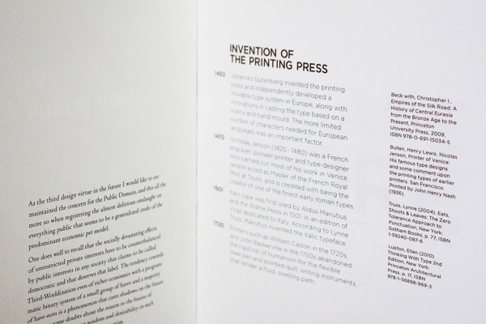
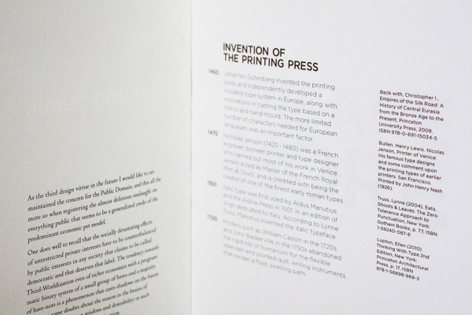
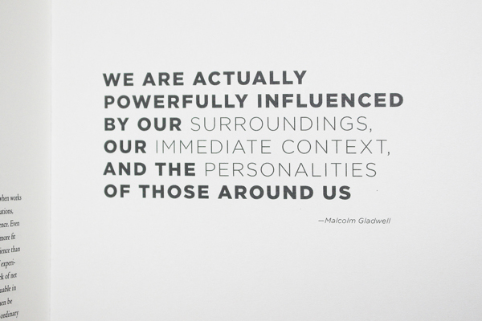
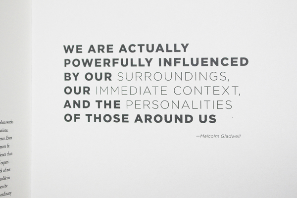

 

Input Output
In this project I was presented with several essays that when paired with what supplementary material I choose, make a statement. With Gui Bonsiepe's Virtues of Design and John Dewey's Art as Experience I choose to use Malcolm Gladwell as the tertiary material as well as a timeline of the evolution of type design as it evolves with society.